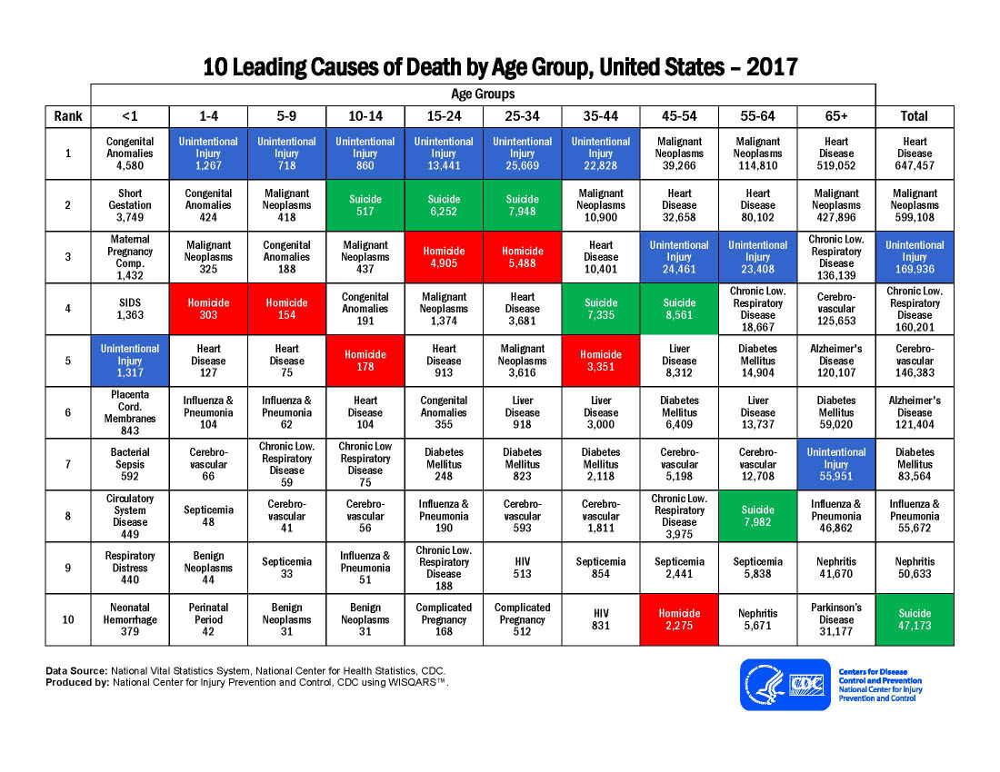
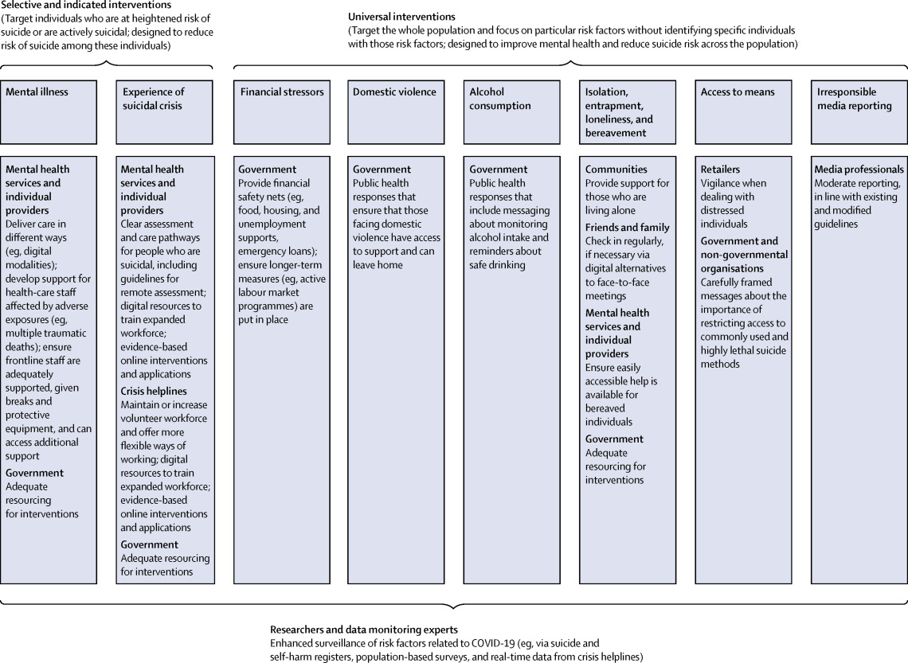

Featured Article
Suicide is defined as intentionally taking one’s own life and comes from the Latin suicidium, which literally means “to kill oneself.” It tends to carry different traits depending on the culture. Historically, and still today in some locations, suicide is considered a criminal offense, a religious taboo, and, in some cases, an act of honor. There are different kinds of suicide. The first one is, completed suicide, it is the successful act of intentionally causing one’s own death. Attempted suicide is an attempt to take one’s life that does not end in death, rather self-injury. Assisted suicide, a controversial topic in the medical field, is defined as an individual helping another individual in bringing about their own death by providing them with the means to carry it out or by providing advice on how to do it.
Individual, relationship, community, and societal factors may influence the risk of suicide. There are a lot of warning signs in suicide. Just like feeling like a burden, being isolated, increased anxiety, feeling trapped or in unbearable pain, increased substance use, looking for a way to access lethal means, increased anger or rage, extreme mood swings, expressing hopelessness, sleeping too little or too much, talking or posting about wanting to die, and lastly, making plans for suicide. In order to help them or prevent them from suicide, you must safeguard the people in your life from the risk of suicide and support them. Ask, keep them safe, be there for them, and follow up them because everyone can play a part in preventing suicide!
IThere are a lot of tips in preventing suicide. Tip 1 is, Speak up if you're worried. If you spot the warning signs of suicide in someone you care about, you may wonder if it’s a good idea to say anything. What if you’re wrong? What if the person gets angry? In such situations, it’s natural to feel uncomfortable or afraid. But anyone who talks about suicide or shows other warning signs needs immediate help—the sooner the better. Talking to a friend or family member about their suicidal thoughts and feelings can be extremely difficult for anyone. But if you’re unsure whether someone is suicidal, the best way to find out is to ask. You can’t make a person suicidal by showing that you care. In fact, giving a suicidal person the opportunity to express their feelings can provide relief from loneliness and pent-up negative feelings, and may prevent a suicide attempt. Tip 2 is, Respond quickly in Crisis. If a friend or family member tells you that they’re thinking about death or suicide, it’s important to evaluate the immediate danger the person is in. Those at the highest risk for committing suicide in the near future have a specific suicide PLAN, the MEANS to carry out the plan, a TIME SET for doing it, and an INTENTION to do it. Lastly, Tip 3 which is, Offer help and support. If a friend or family member is suicidal, the best way to help is by offering an empathetic, listening ear. Let your loved one know that they’re not alone and that you care. Don’t take responsibility, however, for healing your loved one. You can offer support, but you can’t make a suicidal person get better. They have to make a personal commitment to recovery. It takes a lot of courage to help someone who is suicidal. Witnessing a loved one dealing with thoughts about ending their own life can stir up many difficult emotions. As you’re helping a suicidal person, don’t forget to take care of yourself. Find someone that you trust—a friend, family member, clergyman, or counselor—to talk to about your feelings and get support of your own. To help a suicidal person, you must get professional help, follow-up on treatment, be proactive, encourage positive lifestyle changes, make a safety plan, rake a safety plan, and lastly, continue your support over the long haul.

SThe mental health effects of the coronavirus disease 2019 (COVID-19) pandemic might be profound and there are suggestions that suicide rates will rise, although this is not inevitable. Suicide is likely to become a more pressing concern as the pandemic spreads and has longer-term effects on the general population, the economy, and vulnerable groups. Preventing suicide therefore needs urgent consideration. The response must capitalise on, but extend beyond, general mental health policies and practices. The likely adverse effects of the pandemic on people with mental illness, and on population mental health in general, might be exacerbated by fear, self-isolation, and physical distancing.4 Suicide risk might be increased because of stigma towards individuals with COVID-19 and their families. Those with psychiatric disorders might experience worsening symptoms and others might develop new mental health problems, especially depression, anxiety, and post-traumatic stress (all associated with increased suicide risk). These mental health problems will be experienced by the general population and those with high levels of exposure to illness caused by COVID-19, such as frontline health-care workers and those who develop the illness. The consequences for mental health services are already being felt (eg, increased workloads and the need to find new ways of working). The pandemic could adversely affect other known precipitants of suicide. For example, domestic violence and alcohol consumption might increase during lockdown. Public health responses must ensure that those facing interpersonal violence are supported and that safe drinking messages are communicated. Social isolation, entrapment, and loneliness contribute to suicide risk and are likely to increase during the pandemic, particularly for bereaved individuals. Providing community support for those living alone and encouraging families and friends to check in is helpful. Easily accessible help for bereaved individuals is crucial. These are unprecedented times. The pandemic will cause distress and leave many people vulnerable to mental health problems and suicidal behaviour. Mental health consequences are likely to be present for longer and peak later than the actual pandemic. However, research evidence and the experience of national strategies provide a strong basis for suicide prevention. We should be prepared to take the actions highlighted here, backed by vigilance and international collaboration.